TikZiT is a super simple GUI editor for graphs and string diagrams. Its native file format is a subset of PGF/TikZ, which means TikZiT files can be included directly in papers typeset using LaTeX. Pre-built versions are available for systems running Windows, Linux, or macOS. Packages are available for some Linux distributions, or you can build from source.
Windows (exe) Linux (portable binary) macOS (dmg) GitHub Project »
Windows: Click 'Windows (exe)' above to download a zip file and extract it to a convenient place (e.g. C:\tikzit). If you wish to associate .tikz files with TikZiT, run the included .reg file (optional). Note you may need to edit the .reg file with a text editor if you place TikZiT in a different location.
Linux: If you do not wish to build from source, click 'Linux (portable binary)' above to download a tarball and extract it to a convient place (e.g. your home directory). Then, launch the application with ~/tikzit/bin/tikzit (assuming you extracted into your home directory). You may wish to add ~/tikzit/bin to your PATH and install the application launcher and file associations by running ./install-local.sh from inside the TikZiT directory.
There are also packages available for 2 Linux distributions, to install run:
If you are a package maintainer for another distro, get in touch and I will add instructions here.
macOS: Click 'macOS (dmg)' above to download a dmg file. Open this file and copy tikzit.app to your Applications folder. Depending on your system settings, the first time you run TikZiT, you may need to right-click the .app file and select Open from the menu to get the option to run it. After this, you can run TikZiT like a normal application.
Note: The version of TikZiT above requires at least macOS version 10.11 (Yosemite). If you are running an older version of macOS (10.8-10.10), use this version instead. However, to get the latest version of TikZiT, it is recommended to update your operating system.
While TikZiT is easy to use, a few things might not be obvious the first time you run the program. This guide should get you going as quickly as possible. For mac users: throughout this tutorial, substitute ctrl = command and alt = option, as usual.
This tutorial will cover basic editing all the way up to building a LaTeX paper with TikZiT figures in it. Create a new, empty folder somewhere on your computer (which I will refer to as tikzpaper throughout this tutorial). Download tikzit.sty and place it in the folder. Also, create a new sub-directory called figures, which we will use later.
When you open TikZiT for the first time, you will see something that looks like this:
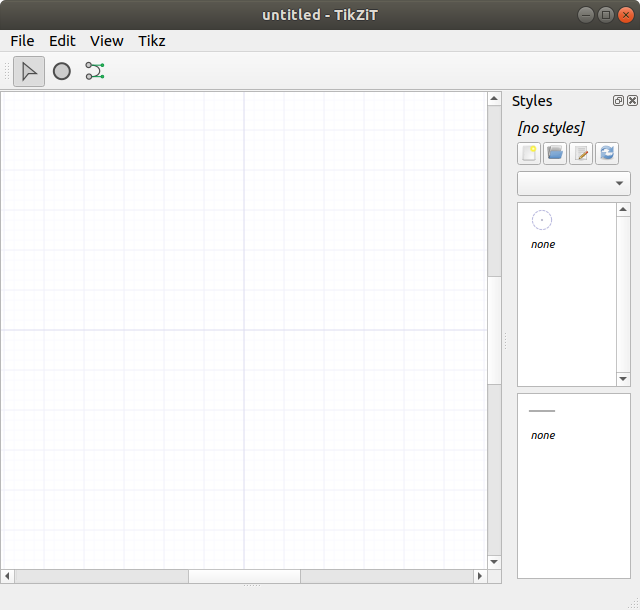The window is divided into two parts: the main part is the graph editor and the part along the side is the style palette. For editing graphs, there are 3 tools: the select tool, the add node tool, and the add edge tool. These can be selected quickly by pressing s, n, or e while the graph editor is in focus.
Pick the node tool and click on the graph a few times to add some nodes. You will notice these appear in TikZiT as dashed circles with a small dot in the middle. These are called invisible nodes. These will not appear in the actual typeset output. However, they can be labelled with pieces of LaTeX code (see below), which will appear in your figure, or used to attach edges. To add edges, select the edge tool and click and drag from one node to another.
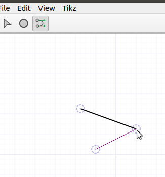Pick the select tool again. You can select individual nodes or edges by clicking on them. You can select multiple nodes by dragging a box around the, and you can select multiple nodes or edges by clicking while holding down the ctrl key.
Selected nodes can be moved by dragging the mouse, or by pressing ctrl + arrow keys. Nodes are locked on a grid, so they normally only move in increments of 0.25 in TikZ coordinates. However, they can be "nudged" by increments of 0.025 by pressing ctrl + shift + arrow keys. This is convenient e.g. for centering nodes between others (5 nudges = 1/2 normal grid cell).
Double-clicking a node gives the ability to set a label, which can contain LaTeX code:
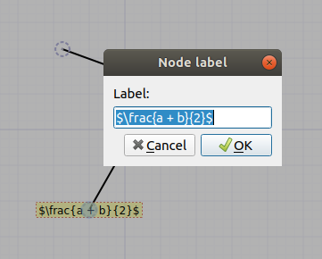Clicking on an edge reveals extra controls for bending the edge. There are two kinds of bend-modes in TikZiT, the basic bend mode (blue controls). Dragging either of the control points will cause the edge to bend to the left or the right:
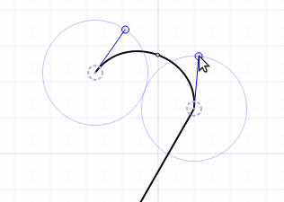Double-clicking the edge will change it to bezier bend mode (green controls). Now, each of the control points can be dragged independently:

Before we can create non-invisible nodes, we will need some styles. To set up styles, we will first create a new style file. In the style palette, click the button, go to the tikzpaper folder, and give the new style file a name, e.g. sample.tikzstyles. Now, we can edit the style file by clicking . This will open the style editor:
On the left side of the window, there is a list of node styles, followed by a list of edge styles. Currently, both lists contain only a single style, called "none". Click the "+" under the list of node styles to add a new node style, and call it red dot. Set the fill color to red, the draw color to black, and the shape to "circle". Then, click "+" again to add a new style called green dot. Set the fill color to green, the draw color to black, and again the shape to "circle".
Note: You can optionally set "in TikZiT" versions of the "draw", "fill", and "shape" properties. This will make nodes or edges look different in TikZiT, but have no effect on how they are typeset. This is useful for visually distinguishing similar styles.
You may also wish to add some edge styles by clicking the "+" under the list of edge styles. If you have many styles, you can also organise them into categories by setting the "Category" field. When you are done adding styles, click "Save and Close" to return to the graph editor.
Now, you will see your new styles in the style palette on the right. To apply a style to a node (or edge), select the node (or edge) it and double-click on the style. If you create new nodes and edges with a certain style selected, they will automatically get that style. To turn nodes these back into invisible nodes, select them and double-click on the "none" style.
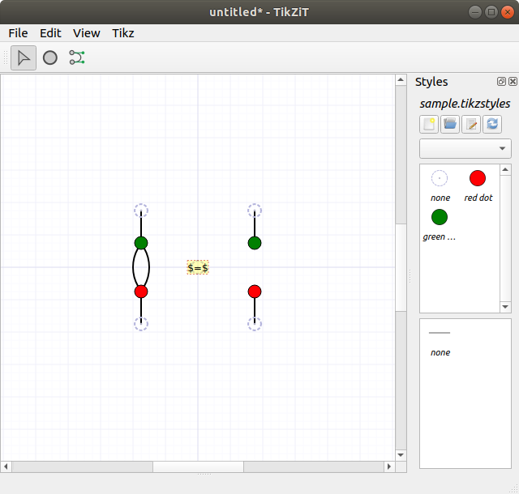The above figure was created with 5 invisible nodes (2 inputs, 2 outputs, and 1 for the equals sign), 2 "red dot" nodes, and 2 "green dot" nodes.
We can now save the figure we created and include it directly in a paper. At the beginning of the tutorial, we created a new folder called tikzpaper containing nothing but tikzit.sty a sub-directory called figures. In TikZiT, click File > Save As..., navigate to tikzpaper/figures, and save or newly-created figure as fig1.tikz.
In a tex(t) editor, create a new file in the tikzpaper folder called paper.tex, and add the following tex:
tikzfig.sty provides two macros for including .tikz files: \tikzfig and \ctikzfig. They both take as an argument the name of a figure (without the .tikz extension), and will search for that figure either in the same directory or in a subdirectly called figures if it exists. Use \tikzfig{FIG} to include FIG.tikz inline or as part of an equation. Use \ctikzfig{FIG} to include FIG.tikz centered on its own line.
Note: Inline TikZ figures align the origin (0,0) to the center of the text line by default, so it's a good idea to always center TikZ pictures on the origin (as indicated by the slightly darker grid lines). This can be tweaked by setting the baseline or yshift properties of the TikZ figure, e.g. \begin{tikzpicture}[yshift=-1mm] ....
Use pdflatex to build paper.tex, and you should get something that looks like this:
Starting with TikZiT 2.1, it is possible to preview your figures directly in TikZiT by pressing ctrl + r.
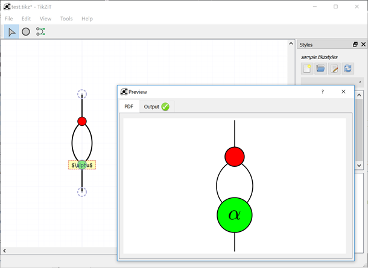If you get a green checkmark, the preview was generated successfully. Otherwise, you can click on the Output tab in the Preview window to see what went wrong.
Note: TikZiT will try to find pdflatex automatically by first searching your system path then common installation locations for TeX. If it fails, you can set the location of pdflatex manually in Tools > Preferences (Windows/Linux) or tikzit > Preferences (macOS).
TikZiT automatically includes tikzit.sty and the active *.tikzstyles file when it generates its preview. So, in the example above, sample.tikzstyles is included automatically. TikZiT will also search the same directory for a *.tikzdefs file with the same name as the active TikZ style file and include it, if it exists. This file can be used to include extra packages, define macros, set up custom PGF/TikZ shapes, etc.
For example, if the active TikZ style file is called sample.tikzstyles, create a new file called sample.tikzdefs in the same directory as sample.tikzstyles with the following LaTeX source:
This file loads the LaTeX package bm and defines a new macro \param, which can be used TikZ pictures. Back in TikZiT, double-click a node and set the label to, e.g. \param{\alpha}, and hit ctrl + r again. TikZiT will automaticall find sample.tikzdefs and include it when it makes the preview:
To make this macro available in your paper, as well as the preview, add \input{sample.tikzdefs} to the preamble:
Note: The use of *.tikzstyles and *.tikzdefs files in the preview replaces the 'Custom Preambles' feature from TikZiT 1.
After you generate a preview, you can export the image to a file or the clipboard by right-clicking on the preview itself and selecting the appropriate option.
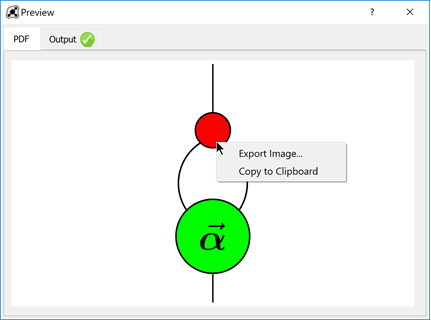If you select Export Image..., the Export Image dialog will be shown, where you can choose where to save the file, as well as its size and format. For the format, you can choose to save either PNG, JPG, or the original PDF file generated by pdflatex. To obtain SVG output, it is recommended that you export to PDF, then use a vector graphics utility such as Inkscape to convert to SVG.
There are quite a few tricks to getting things to look nice in TikZiT, usually using a combination of PGF/TikZ hackery and invisible nodes. Here are a quick tips:
Select tool active will create a node. Right-clicking and dragging between nodes will create edges.\tikzstyle{NAME}=[PROPERTIES] (see below). This is convenient for bulk editing or merging sets of styles. After you edit a style file, click in the style palette to refresh the styles.\[ \tikzfig{fig-lhs} \ =\ \tikzfig{fig-rhs} \]. This is useful if you have long strings of equalities or re-use figures many times.\tikzfig command in a \scalebox. To just scale coordinates, use the scale, xscale, or yscale TikZ properties.The following sections give some more detailed tips.
If you select an edge and hold down the ctrl key, you will notice a <> symbol appear above one endpoint of the edge. If you use the left and right arrow keys, this adjust the in-angle of the edge. If you hold ctrl + shift, the other end of the edge will highlight and you can adjust the out-angle similarly. In either case, the up and down arrows adjust the looseness of the edge.
With a node/edge selected, press ctrl + j to jump to that line of the TikZ source.
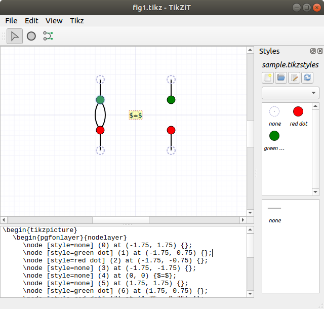You can edit this by hand, and press ctrl + t to update the graph editor with the new TikZ code. You need to be a bit careful, since TikZiT only understands a subset of TikZ, but adding and removing TikZ properties on nodes or edges works just fine. For this, the PGF/TikZ manual is your friend.
If you can't get the TikZ code to parse again, or you decide you didn't want to make a change after all, you can revert your changes to the TikZ code by pressing ctrl + alt + t.
For string diagrams, flowcharts, etc. one often wants to create boxes with multiple input and output wires. While TikZ has a notion of "anchors" which support this, I find the following technique more convenient.
TikZiT always draws nodes on top of edges, so to draw boxes with multiple inputs and outputs, first create one or more node styles for boxes. To get large boxes, click the "+" button under the property list and set the minimum width and minimum height properties. (Double-click a property or its value to change it.)
For example: a medium-sized box (2-3 inputs and outputs), drawn horizontally, looks pretty good with minimum width set to 0.75cm and minimum height set to 1cm.
Now, add nodes with the medium box style where you wish to put boxes. For example, here are two such boxes, labeled $f$ and $g$:
Then, create invisible nodes for inputs and outputs and draw edges to wire them together, getting a figure that looks like this:
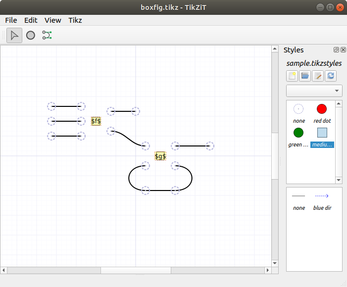The final typeset figure will then come out like this:
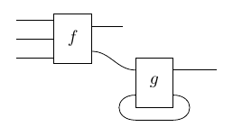While it might seem a bit awkward to create styles for every possible size, in practice this isn't too bad, for 2 reasons:
small box, medium box, large box) imposes some discipline on how you make your figures, and creates more consistent-looking papers overall. (This made a big difference here!)Suppose later on we come to our senses and decide to draw figures from bottom-to-top rather than left-to-right. To do this, first swap the minimum height/width values in the style editor. That is, set minimum width to 1cm and minimum height to 0.75cm. Then, with our figure open, hit ctrl + a to select everything and alt + shift + ◂ to rotate counter-clockwise. Then we get this:
which typesets as:
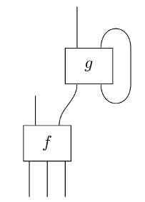Then, suppose even later on our annoying co-author insists figures go from top-to-bottom rather than bottom-to-top. To fix this, hit ctrl + a to select everything again and alt + ▼ to flip vertically. Then we get a new TikZ figure, which typesets as:
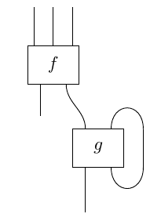Many PDF readers have a reverse lookup feature, which enables you to jump to a line of Tex code when e.g. double-clicking a point in the generated PDF document. Normally, you want the line of TeX to be displayed in your main text editor or LaTeX editor, but if you click on a part of the PDF which came from a \tikzfig, it is convenient for this to open directly in TikZiT.
This can be done via the following python script, texopen.py: {% highlight python %} #!/usr/bin/python import sys import subprocess if len(sys.argv) >= 3: file = sys.argv[1] line = sys.argv[2] print(file) print(line) if file.endswith('.tikz'): subprocess.call(['tikzit', file]) else: subprocess.call(['subl', file + ':' + line]) {% endhighlight %}
Note this script uses Sublime Text as the default editor (hence subl in the last line above). Obviously you can customise this to use your preferred editor.
To use this script, place it somewhere that your PDF viewer can find, and set it up as your 'editor'. For example, in Okular, go to Settings > Configure Okular.... Click on the Editor tab, select 'Custom Text Editor' and add the following as the command: texopen.py %f %l. Here, the %f is a placeholder for the active file, and %l the line of code.
Configuration in other popular PDF editors (e.g. Preview, Skim, Sumatra) should be similar. On Windows systems, you will probably want to set the editor as something like C:\path\to\python.exe C:\path\to\texopen.py %f %l.
For reverse lookups to work, make sure you are building with synctex enabled. This happens automatically if you are using a tool like Latexmk or various GUI LaTeX editors or plugins. You will typically see a file with an extension like *.synctex.gz being generated when you build.
TikZiT's .tikz and .tikzstyle file formats are both subsets of PGF/TikZ's TeX-based format. TikZ style files have a very simple format. They are just a list of \tikzstyle commands. Here is the full grammar:
Where SIMPLE_STRING means a string consisting of letters, numbers, and whitespace and DELIMITED_STRING means a string inside of curly braces. The latter can contain nested curly braces, provided they occur in matched pairs.
TikZ figure files consist of a {tikzpicture} environment, in which there is a list of \node commands, followed by a list of \edge commands. Nodes and edges, as well as the figure as a whole can have properties. Here is the full grammar:
Note: TikZiT 2.x currently does not use the bounding box command, but it is allowed for compatibility with TikZiT 1 files.